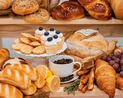
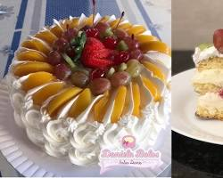
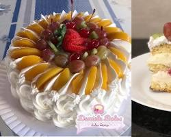

Nossa História: O Sabor que Atravessa Gerações A Padaria Jamaica não nasceu apenas para vender pães, mas para compartilhar uma herança. Desde 1972, nossas portas se abrem com o mesmo compromisso: trazer para a sua mesa o calor e o carinho de uma receita feita à mão. O que começou como um pequeno sonho familiar transformou-se em um ponto de encontro para a nossa comunidade. Aqui, cada ingrediente é escolhido com cuidado e cada fornada carrega o segredo de décadas de dedicação. Para nós, o pão quentinho é mais que um alimento; é o convite para um bom café e uma conversa sem pressa. Nossa missão? Continuar alimentando memórias, um pão de cada vez.
Sobre a Padaria Jamaica
Nossos produtos
O Sabor da Autenticidade em Cada Fornada Nossa vitrine é um mosaico de cores, aromas e texturas. Na Padaria Jamaica, cada produto é o resultado de um processo artesanal que respeita o tempo e a tradição. Desde os nossos famosos Jamaican Patties — com sua massa dourada e crocante e recheios intensamente temperados — até nossos pães de fôrma artesanais, macios e perfeitos para o café em família. Aqui, não fazemos apenas comida; entregamos o conforto de uma receita feita com ingredientes selecionados e muito carinho. Explore nossa seleção e leve o verdadeiro sabor da nossa casa para a sua mesa.
| Categoria | Produtos | Descrição | Preços |
|---|---|---|---|
| Pães | Pão Francês (Unidade) | O clássico fresquinho e crocante, saídas de hora em hora. | R$ 1,20 |
| Pães | Pão de Coco "Jamaica" | Pão doce macio com recheio de creme de coco e cobertura ralada. | R$ 8,50 |
| Pães | Baguete Recheada | Baguete com gergelim, recheada com presunto, queijo e ervas. | R$ 14,00 |
| Pães | Pão de Queijo Especial | Receita mineira com mix de queijos canastra e parmesão. | R$ 4,50 (un) |
| Doces | Sonho de Creme | Massa leve e frita, polvilhada com açúcar e recheio de baunilha. | R$ 6,00 |
| Doces | Fatia de Bolo de Milho | Bolo caseiro úmido, perfeito para acompanhar o café. | R$ 5,50 |
| Salgados | Croissant Amanteigado | Massa folhada legítima, crocante por fora e macia por dentro. | R$ 9,00 |
| Combos | Café + Pão na Chapa | O café da manhã tradicional brasileiro. | R$ 12,00 |
| Sucos | Suco de Laranja (300ml) | Suco natural da fruta, feito na hora. | R$ 8,00 |
| Sobremesa | Torta de Frutas Tropicais | Fatia de torta com base de biscoito, creme e frutas da estação. | R$ 11,00 |
Nossa Qualidade
O Segredo está no Cuidado Na Padaria Jamaica, a qualidade não é apenas uma meta, é o nosso ingrediente principal. Acreditamos que o pão perfeito nasce da união entre paciência e excelência.
- Ingredientes Selecionados: Ingredientes Selecionados: Escolhemos a dedo cada fornecedor, priorizando farinhas puras e especiarias autênticas que trazem o verdadeiro sabor caribenho.
- Produção Diária: Produção Diária: Não trabalhamos com estoques antigos. Tudo o que você encontra em nossa vitrine foi produzido artesanalmente nas últimas horas.
- Sem Atalhos: Sem Atalhos: Respeitamos o tempo de fermentação natural e os processos manuais que as máquinas não conseguem replicar.
| Dia da Semana | Abertura | Fechamento |
|---|---|---|
| Segunda à sexta-feira | 08:00 | 20:00 |
Galeria
Nossa padaria
Nossos Produtos
 
